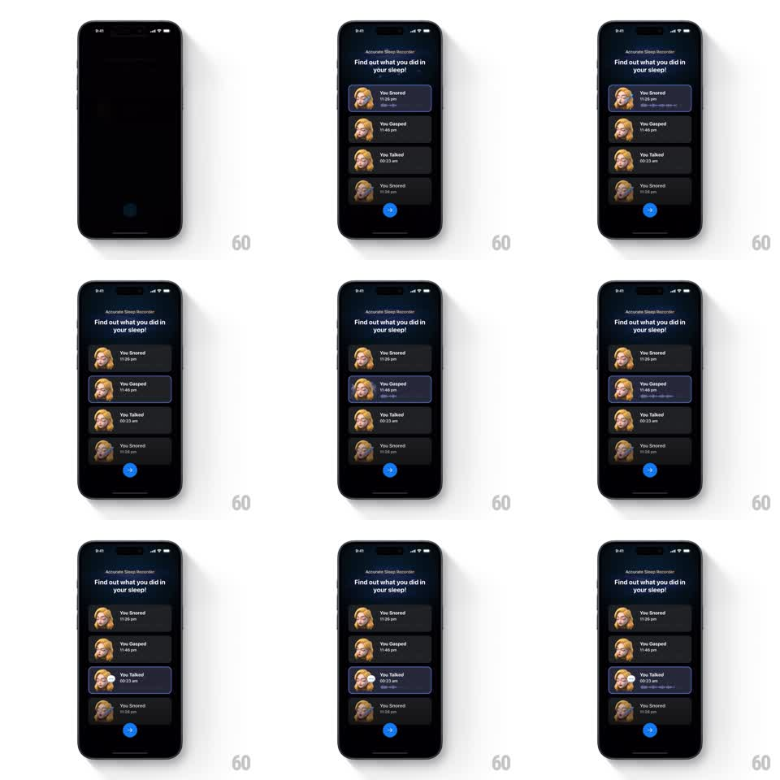

Media
Frame-by-frame

Rebuild this animation 1:1: ShutEye's sleep recorder list - under "Find out what you did in your sleep!", recording cards highlight one by one, each active card gaining a glowing border and a live audio waveform.

Rebuild this animation 1:1: ShutEye's sleep recorder list - under "Find out what you did in your sleep!", recording cards highlight one by one, each active card gaining a glowing border and a live audio waveform. ## Integration Integration: stack-agnostic spec - springs given as stiffness/damping, timed motions as duration + curve; map every value to your framework and animation library of choice. ## Scene A dark screen with the "Accurate Sleep Recorder" eyebrow and headline "Find out what you did in your sleep!". A vertical list of recording cards (You Snored, You Gasped, You Talked, You Snored) each with a sleepy avatar thumbnail and a timestamp (11:26 pm, 11:46 pm, 00:23 am, 11:28 pm). A blue arrow button sits below. ## Motion spec Pattern: cycling card highlight with waveform reveal, ~5s loop. - The list fades in as a whole (300ms), then the first card activates: a bright blue border glows around it (200ms) and a waveform draws in beneath its title (300ms, left to right). - While active, the waveform's bars animate as if playing (subtle per-bar height oscillation). - After 900ms the card deactivates (border and waveform fade, 200ms) and the next card down activates in the same way, cycling through the list. - The arrow button pulses gently throughout. ## Calibration - Only one card is active at a time; the handoff is a quick fade down, fade up. - The waveform appears inside the card, expanding its height slightly (spring stiffness 300 damping 22). ## Reduced motion First card stays highlighted with a static waveform. ## Don't miss - The active card's glow is the same blue as the arrow button. - Inactive cards are flat dark rows - the contrast sells the cycle.